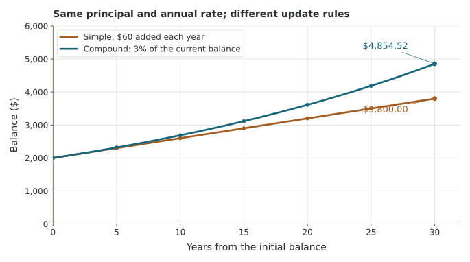
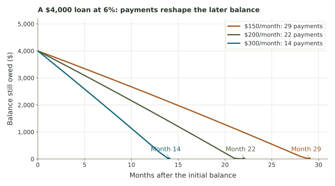

Watch the balance become the next input.
Compare savings growth, then trace a loan through interest, actual payments, principal reduction, and payoff.
Predict one change, then inspect the result
The savings model starts with one deposit, no later deposits or withdrawals, and a fixed nonnegative nominal annual rate. The loan model adds interest once per month and applies a payment afterward, with no new borrowing or fees. All rates here are hypothetical.
Compare savings growth or investigate loan repayment. Every graph is accompanied by numerical values. Enter dollars without a dollar sign, and enter annual rates as percentage numbers: use 6 for 6%, not 0.06.
Compare fixed additions with compounding

Teal is compound growth and rust is simple growth. Annual markers show completed years. Connecting lines guide the eye; the compounding schedule determines the update dates. The vertical axis starts at zero.
Follow interest and payments to the final balance

Monthly repayment table
By default the table shows the first six months and the last simulated month. The last row is a payoff only when its ending balance is zero. An unchanged balance and a growing balance have different result statements.
Five investigations
- For savings at $2,000 and 3%, compare years 1, 5, and 30 with annual compounding. Why do the first-year amounts tie?
- Set principal $1,000, annual rate 6%, and ten years. Change only compounding frequency. Compare the effective yield with the quoted nominal rate.
- For the reading’s loan, compare month 1 with month 5. Which part of the $200 payment changes, and why?
- Choose interest exactly covered, then payment below interest. Explain the distinction between a constant debt and a growing debt. In each case, what does the payment cover?
- Return to the reading’s loan and limit the simulation to six months. Explain why six is not its payoff month. Then restore a long enough horizon and compare the two rounding methods.
For the application’s original comparison results, select its presets and keep full internal precision. For the reading, lab’s hand table, and discussion, use monthly cent rounding. The difference is part of the model and is stated with each result.
A model of a schedule
The rate is fixed, payment happens after interest, and there are no new charges. Actual financial products can use different timing and calculation rules. Use the displayed assumptions to interpret this classroom comparison.